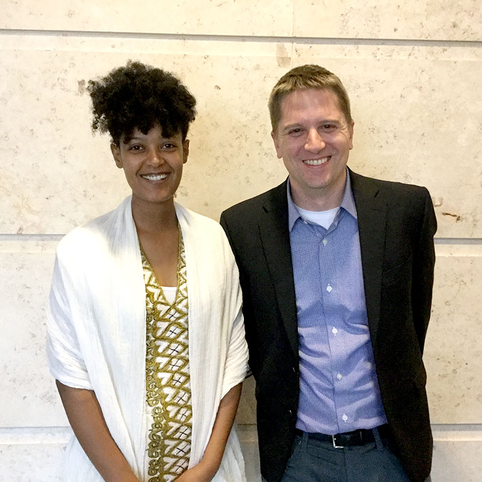
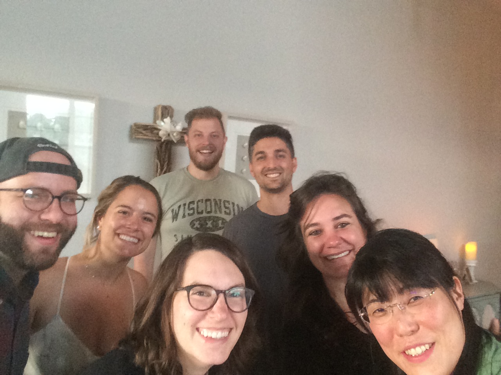
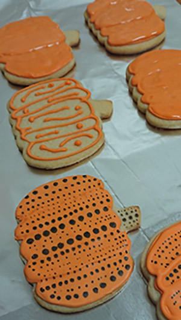
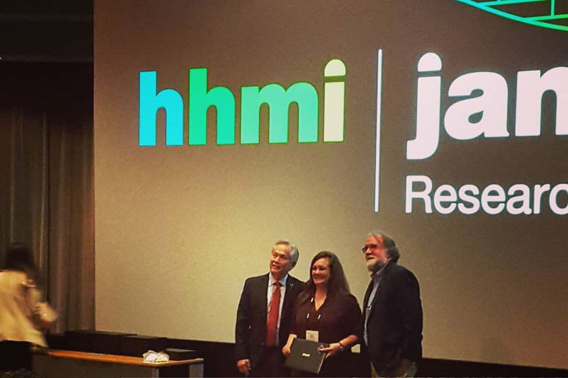
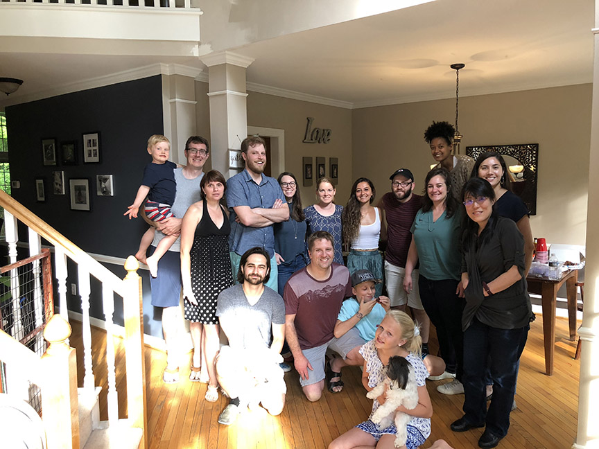
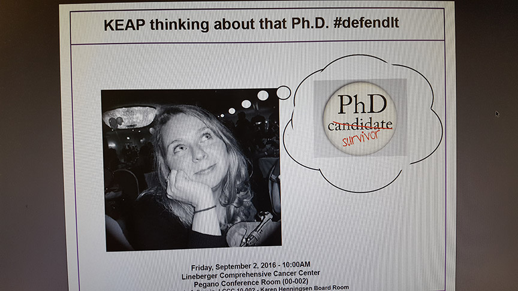
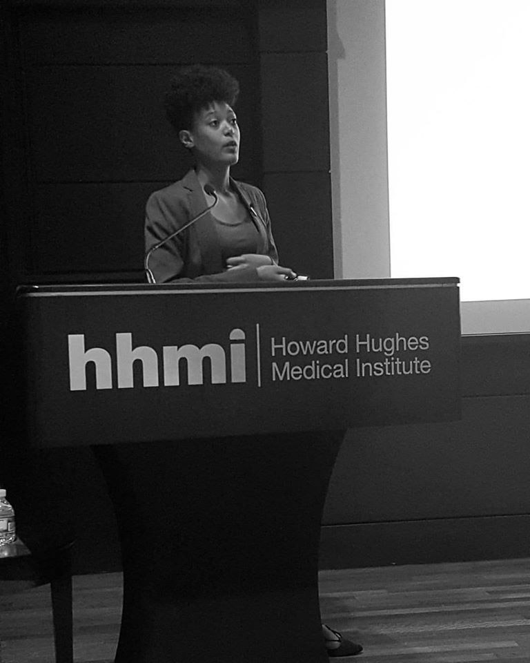

2020
| July 1, 2020 | The Major Lab welcomes new postdoc Chase Weidmann to the team. |
| January 31, 2020 | The Major Lab has officially closed the lab down at UNC. We had many great years at UNC, but we are looking forward to many great years at WashU! |
2019
| October 29, 2019 | Congrats to Tigist Tamir who successfully defended her thesis today!  |
| September 5, 2019 | Major lab said good bye to Yuko today as she is returning back to Japan! As a goodbye present, Brittany made Yayoi Kusama inspired cookies, one of Yuko's favorite artists. We are hoping to see her back in the Major lab soon!   |
| July, 1, 2019 | Megan Agajanian was presented with a Graduate Fellow Award from LCCC which includes $3000! |
| July 1, 2019 | Kyle and Brittany are now in STL to help set up the lab at WashU. Wish them luck! |
| March 2019 | Ben has officially announced the lab will be moving to WashU. A bittersweet day, but excited for new beginnings! |
2018
| November 16, 2018 | Major lab had a fun second Lab Friday Happy Hour! |
| September 2018 | The Major lab welcomes new postdoc Kyle LaPak to the the lab. |
| July, 19, 2018 | Megan Agajanian was awarded the prestigious HHMI Gilliam Fellowship award!  |
| June 20, 2018 | Congratulations to Dennis Goldfarb who successfully defended his thesis today! |
| June 1, 2018 | The Major lab welcomes new postdoc Dhaval Bhatt to the lab. |
| May 20, 2018 | Major lab said goodbye to Emily as she moves up to Ann Arbor with her family. We will miss you!  |
2017
| November 13, 2017 | Congratulations to Erica Cloer for successfully defending her thesis today! |
2016
| September 9, 2016 | Megan Agajanian won best poster for graduate students at the annual LCCC retreat. |
| September 2, 2016 | Kathleen Mulvaney successfully defended her thesis!!  |
| August 4, 2016 | Tigist Tamir received the prestigious Howard Hughes Medical Institute Gilliam Fellowship! She is the first UNC School of Medicine graduate student to do so!  |
2015
| February and August 2015 | The Major lab welcomes two new postdocs Emily Cousins and Brittany Bowman. |
2014
| December 9th, 2014 | Matt Walker was awarded $105,000 grant from the Lymphoma Research Foundation |
| November 7th, 2014 | Kathleen Mulvaney wins best presentation at the Initiative for Maximizing Student Diversity Symposium (IMSD), UNC Chapel Hill |
2013
| July 10th, 2013 | Bridgid successfully defended her thesis. She's our lab's first graduating student and will be sorely missed. Due to her side career as a model, contractual restrictions have forced us to blur her face.


|
|
| June 8th, 2013 1:36 AM. | Postdoc Matt is a father. What has the world come to!? Baby George was born perfectly heathly, weighing in at 7lbs 2oz. Luckily he looks more like his mother. Good job Beth! Congrats to you both! | |
| June 1st 2013 | Postdoc Matt won second place at a poster competition. Prize money goes towards a pizza party, right? | |
| May 21st 2013 | Our mass spectrometer has been upgraded to a Velos Orbitrap Elite! |
2012
| December 19th 2012 | Graduate student Bridgid Hast was selected to give a talk at The Cancer Genome Atlas' 2nd Annual Scientific Symposium: Enabling Cancer Research Through TCGA. Her presentation, entitled "Functional Characterization of KEAP1 TCGA Mutants in Squamous Cell Carcinoma" is available via YouTube! |
| October 11th 2012 | Our very own Matt Walker won Lineberger's 37th Annual Postdoc-Faculty Research Day poster contest with his poster entitled 'Functional Genomic Screening of WNT/Beta-Catenin Signaling.' Congratulations Matt! |
| September 5th 2012 | Major Lab website goes live. |
| August 30th 2012 | Science Signaling has accepted our manuscript for "FAM123A Binds Microtubules and Inhibits the Guanine Nucleotide Exchange Factor ARHGEF2 to Decrease Actomyosin Contractility" and selected it for the issue's cover, and also recieved a feature on the Lineberger Comprehensive Cancer Center website. Congratulations to Priscila! |